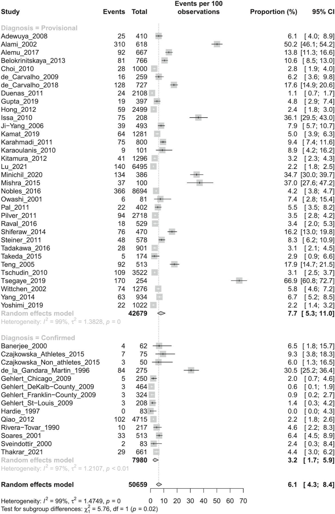

Página 9 · Síndrome pré-menstrual e síndrome disfórica pré-menstrual
Sete questões depois: as armadilhas de linguagem e o treino
"A paciente tem TPM."
Escrever "TPM" na resposta é o erro mais barato deste tema — e o mais comum. O termo existe, é o que se usa com a paciente, e não faz parte do jargão médico. Em prova, escreve-se síndrome pré-menstrual.
“TPM” é termo de consultório, não de prova
A armadilha de terminologia mais forte do tema é também a mais simples: tensão pré-menstrual — "TPM" — é o termo usado com a paciente, no dia a dia, e não faz parte do jargão médico. Ele é útil na consulta, porque a paciente o entende de imediato; é impróprio na resposta, porque não nomeia nenhuma das duas entidades com critério. Em prova, escreve-se síndrome pré-menstrual e síndrome (ou transtorno) disfórico pré-menstrual. Não se responde "TPM".
Traduzir o enunciado: “tensão pré-menstrual com disforia”
O corolário é o que rende ponto. Como o termo leigo circula, a banca o usa — e cabe ao candidato fazer a tradução sozinho. Quando o enunciado escreve "tensão pré-menstrual com disforia", o que está sendo descrito é a síndrome disfórica pré-menstrual; e, uma vez traduzido, o resto se resolve em uma linha: eixo psíquico → inibidor de recaptação de serotonina. O gesto serve a qualquer tema: primeiro traduza o enunciado para a entidade com critério, depois decida. Quem tenta decidir sobre a palavra leiga escolhe pela sonoridade das alternativas.
Os dois formatos em que o tema cai
As questões deste assunto vêm de duas formas. Boa parte é muito direta: pergunta a droga certa para o alvo descrito, e responde-se pelo pareamento (edema → combinado ou espironolactona; cefaleia → a escada; mastalgia → dopaminérgico ou tamoxifeno; psíquico → inibidor de recaptação). A outra parte traz casos clínicos para chegar ao diagnóstico e marcar a diferença entre a manifestação da forma disfórica e a da síndrome pré-menstrual — e aí o que decide são os dois conjuntos de critérios, não a lista de sintomas. Saber de antemão qual dos dois formatos está na frente já economiza metade do tempo de prova.
O colecionador: as armadilhas em ordem de aparição
Reunindo o que atravessa o tema, sem fato novo: diplopia não figura entre os sintomas da síndrome pré-menstrual; deficiência de vitamina C não entra na fisiopatologia (os nutrientes com literatura são cálcio, vitamina D, B6 e magnésio); dizer que os inibidores de recaptação não devem ser usados é incorreto; dizer que mudanças de estilo de vida não trazem benefício é incorreto; dado de prevalência inflado no enunciado não muda a resposta, e a faixa de um dígito (3-8%) é do transtorno disfórico, não da síndrome pré-menstrual; labilidade afetiva reduzida não é critério — o critério é acentuada; o diário prospectivo é de 2 ciclos, e os 12 meses são da história retrospectiva; a mutação do fator V de Leiden (nunca "deficiência") bloqueia o combinado, categoria 4, e a abordagem inicial passa a ser o diurético; a cabergolina é o distrator da fluoxetina quando o eixo é psíquico; e "TPM" não é termo de prova.
| O que a banca faz | O que é certo |
|---|---|
| escreve "TPM" / "tensão pré-menstrual" | o termo técnico é síndrome pré-menstrual; "tensão pré-menstrual com disforia" = síndrome disfórica |
| oferece diplopia entre os sintomas | diplopia não figura em nenhuma das duas colunas (mas sintoma visual pré-existente pode piorar) |
| sugere deficiência de vitamina C na etiologia | não há menção a vitamina C; os nutrientes com literatura são cálcio/vitamina D, B6 e magnésio |
| afirma que inibidores de recaptação não devem ser usados | devem, quando há sintomas psíquicos de maior gravidade, associados à psicoterapia |
| afirma que estilo de vida não traz benefício | traz — e é por onde se começa na síndrome pré-menstrual |
| infla a prevalência no enunciado | dado irrelevante não muda a resposta; e 3-8% é do transtorno disfórico, não da síndrome |
| escreve "labilidade afetiva reduzida" | o critério é labilidade afetiva acentuada |
| exige "diário de 12 meses" para confirmar | o diário prospectivo é de ≥2 ciclos; os 12 meses são da história retrospectiva |
| escreve "deficiência do fator V de Leiden" | é mutação (ganho de função, resistência à proteína C ativada); deficiências são de proteína C, proteína S e antitrombina |
| oferece combinado a paciente com fator V de Leiden | combinado é categoria 4 (contraindicado); abordagem inicial = diurético (progestágeno isolado Cat. 2 · DIU de cobre Cat. 1) |
| oferece cabergolina no quadro disfórico | cabergolina é da mastalgia grave na fase lútea; no eixo psíquico, fluoxetina |
Onde a base termina e o detalhe fino começa
A base que responde à maioria das questões são as duas entidades, os dois conjuntos de critérios, a graduação que decide a conduta, as rotas terapêuticas por sintoma-alvo e as armadilhas de linguagem. Bancas de especialista às vezes cobram um detalhe fino fora dessa base — e errar um detalhe desses não desmonta ninguém.
Os dois conjuntos de critérios são espelhados — e é isso que se troca
Os dois conjuntos de critérios são espelhados: mesma constelação de sintomas, exigências diferentes. Sob pressão de tempo, é exatamente aí que a troca acontece — a forma leve recebe o critério da grave, e a grave o da leve. Reler os critérios ajuda pouco; classificar quadros até parar de trocar é o que resolve.

Até 90% relatam ao menos um sintoma pré-menstrual, 20–30% preenchem critério de síndrome pré-menstrual — no Brasil, o Ministério da Saúde trabalha com 20–50% — e 2–5% têm transtorno disfórico; o gráfico mostra por que a faixa clássica de 3–8% pertence ao transtorno. Leia os dois diamantes agrupados na coluna direita: no bloco superior, estudos baseados em diagnóstico provisório, geralmente retrospectivo, resultaram em 7,7% (IC95% 5,3–11,0); no bloco inferior, o diagnóstico confirmado prospectivamente produziu 3,2% (IC95% 1,7–5,9). A diferença mostra como o método diagnóstico altera a estimativa. A escada epidemiológica deve permanecer separada em três níveis: ter ao menos um sintoma não equivale a preencher critério de síndrome; preencher critério de síndrome não equivale a transtorno disfórico. O principal confundível é tratar um rastreio retrospectivo positivo como diagnóstico confirmado — por isso 3–8% nunca deve ser rotulado como prevalência da síndrome pré-menstrual. Limitação: a heterogeneidade da meta-análise foi alta (I²=99%), de modo que o gráfico explica a origem metodológica da faixa clássica, mas não autoriza apresentar 7,7% como prevalência universal confirmada.
Reilly TJ, Patel S, Unachukwu IC, et al. The prevalence of premenstrual dysphoric disorder: Systematic review and meta-analysis. Journal of Affective Disorders. 2024;349:534–540, Figura 2. Licenciada sob CC BY 4.0. Sem alterações. Fonte: doi.org/10.1016/j.jad.2024.01.066.
Quiz de fechamento
Sobre a terminologia dos distúrbios pré-menstruais, é correto afirmar:
- Gabarito B. O termo leigo precisa ser traduzido: "tensão pré-menstrual com disforia" é a síndrome disfórica pré-menstrual, eixo psíquico, tratada com inibidor de recaptação de serotonina.
- A. inverte: "tensão pré-menstrual" é o termo usado com a paciente, não o técnico — em prova escreve-se síndrome pré-menstrual.
- C. é falsa: os dois nomes designam a mesma entidade, e as bancas usam ambos indistintamente.
- D. carrega duas impropriedades numa frase só: o fator V de Leiden é mutação (ganho de função, resistência à proteína C ativada), não deficiência — deficiências são de proteína C, proteína S e antitrombina — embora a segunda metade da alternativa, a contraindicação ao combinado, esteja correta.
- Por que cair na (D). metade verdadeira é o disfarce mais eficaz de uma alternativa falsa; a checagem é ler cada oração como uma afirmação independente.
Paciente de 34 anos com quadro cíclico de labilidade acentuada, irritabilidade, humor deprimido, fadiga e distensão abdominal na semana que antecede a menstruação, com prejuízo nas relações profissionais. Já registrou sintomas em diário por dois ciclos, com melhora documentada após o início do fluxo, e não há transtorno psiquiátrico. A conduta mais adequada inclui:
- Gabarito C. O quadro fecha transtorno disfórico: cinco sintomas com pelo menos um do grupo central, na semana que antecede, diário prospectivo de dois ciclos com melhora documentada, exclusão psiquiátrica feita e prejuízo funcional importante. Nessa forma, psicoterapia não basta — associa-se terapêutica medicamentosa, e o eixo psíquico pede o inibidor de recaptação, em esquema contínuo ou intermitente.
- A. subtrata: mudança de hábito é o primeiro degrau da forma leve a moderada, e a paciente está do outro lado da graduação.
- B. é exatamente a afirmação que o conteúdo desmonta: na forma disfórica a psicoterapia isolada não resolve, ainda que a terapia cognitivo-comportamental tenha recomendação forte e seja parte da abordagem.
- D. escolhe a rota errada: espironolactona ataca retenção hídrica, e a distensão abdominal é aqui o sintoma menos incapacitante do conjunto — tratar o edema deixaria intacto o que atrapalha.
- Por que cair na (D). há um sintoma somático no enunciado, e o aluno agarra o alvo que sabe tratar; a disciplina é perguntar qual sintoma domina o prejuízo, não qual sintoma se sabe medicar.
Assinale a alternativa correta sobre critérios e prevalência:
- Gabarito C. É a arquitetura exata do critério da síndrome pré-menstrual: conjunção obrigatória (um afetivo e um somático), avaliação retrospectiva de três ciclos consecutivos e presença nos ≥5 dias que antecedem a menstruação.
- A. funde os dois registros: os 12 meses são da história retrospectiva; o diário prospectivo é de ≥2 ciclos.
- B. é a armadilha numérica central do tema: 3-8% é a faixa do transtorno disfórico — a síndrome pré-menstrual com critério fica em 20-30% (no Brasil, 20-50%), e é justamente por isso que ela é 6 a 10 vezes mais frequente que a disfórica.
- D. inverte o marco: os sintomas começam a ceder com o início do fluxo, ficando mínimos ou ausentes em até cerca de quatro dias, sem recorrência até o dia 12-13 — e isso vale para as duas formas.
- Por que cair na (B). a faixa de um dígito circula colada à sigla mais popular, e quase ninguém pergunta de quem ela é; a âncora que fixa a atribuição correta é a origem do número — 3,2% de transtorno disfórico confirmado prospectivamente e 7,7% provisório.
A base que fecha os dois diagnósticos no consultório responde à maioria das questões; detalhe fino de especialista existe e não desmonta ninguém.